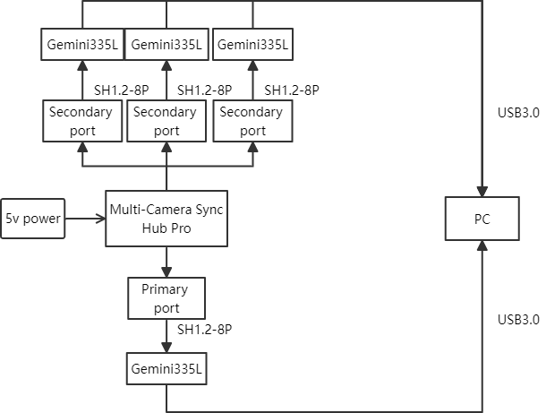
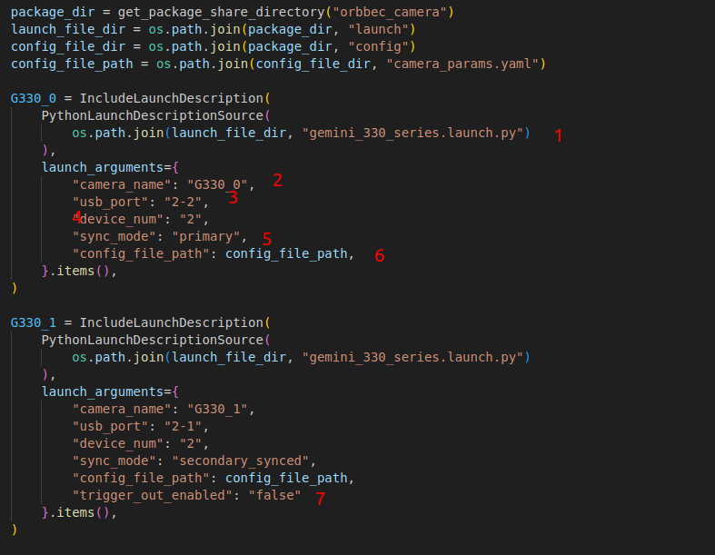

多相机同步说明
本文档的目的是说明如何在 OrbbecSDK_ROS2 中使用多相机同步
设置说明
请阅读多相机同步设置指南：多相机同步设置
确保相机正确连接到多相机同步器。

使用 OrbbecSDK_ROS2 检查相机端口
ros2 run orbbec_camera list_devices_node
OrbbecSDK_ROS2 多相机同步配置
打开 multi_camera_synced.launch.py，并按照下面所示配置相机设置：

gemini_330_series.launch.py是用于启动相机的启动文件。将
camera_name设置为G330_0。例如，发布的彩色图像话题将是/G330_0/color/image_raw。将
usb_port设置为2-2，表示正在使用端口2-2上的相机设备。此值可以在ros2 run orbbec_camera list_devices_node命令的输出中找到。将
device_num设置为2，表示将使用两个相机。将
sync_mode设置为primary，表示2-7相机设备处于主模式。多相机同步模式选项可以在下图中找到。来自
config_file_path的参数可以覆盖在gemini_330_series.launch.py中设置的参数（可选）。对于从属相机，将
trigger_out_enabled设置为 false。
| 模式名称 | 设置效果说明 |
|---|---|
| free_run | - 支持不同的帧率设置 - 8 针同步接口不支持外部输出同步相关信号 |
| standalone（默认） | ● 默认与 Primary 相同 ● 内置 RGBD 帧同步 ● 8 针同步接口默认不向外部输出信号 |
| primary | ● 设置为主相机 ● 8 针同步接口向外部设备输出信号 |
| secondary | ● 设置为从属（被动同步；当外部有硬件连续触发信号输入且连续触发信号与当前设置的帧率匹配时，根据外部触发信号采集图像；当没有外部触发信号时，停止流） ● 8 针同步接口向外部设备输出信号 |
| secondary_synced | ● 设置为从属同步（被动同步；当外部有硬件连续触发信号输入且连续触发信号与当前设置的帧率匹配时，根据外部触发信号采集图像；当没有外部触发信号时，根据设置的帧率的内部触发信号采集图像） ● 8 针同步接口向外部设备输出信号 |
| hardware_triggering | ● 设置为硬件触发（被动触发；当外部有硬件触发信号输入且触发信号时间间隔不小于当前上限时，根据外部触发信号采集图像；当没有外部触发信号时，不采集图像） ● 8 针同步接口向外部设备输出信号 |
| software_triggering | ● 设置为软件触发（被动触发；当主机有触发命令输入且触发命令时间间隔不小于当前上限时，根据触发命令采集图像；当没有触发命令时，不采集图像） ● 8 针同步接口向外部设备输出信号 |
主相机应该最后启动。
理想情况下，启动每个相机之间应该有 2 秒的延迟。
运行以下命令启动多相机同步
ros2 launch orbbec_camera multi_camera_synced.launch.py